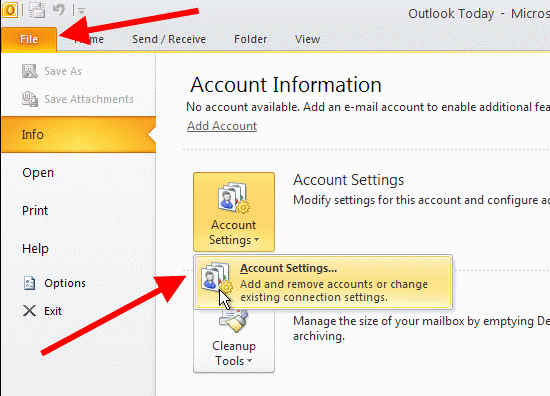
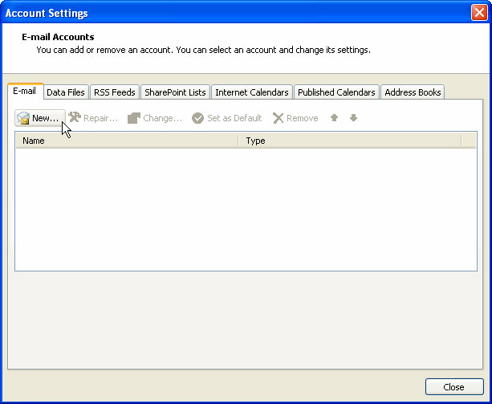
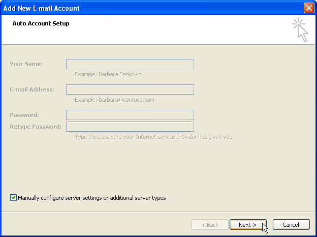
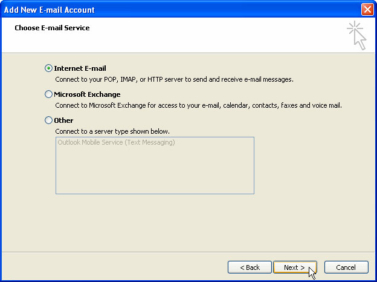
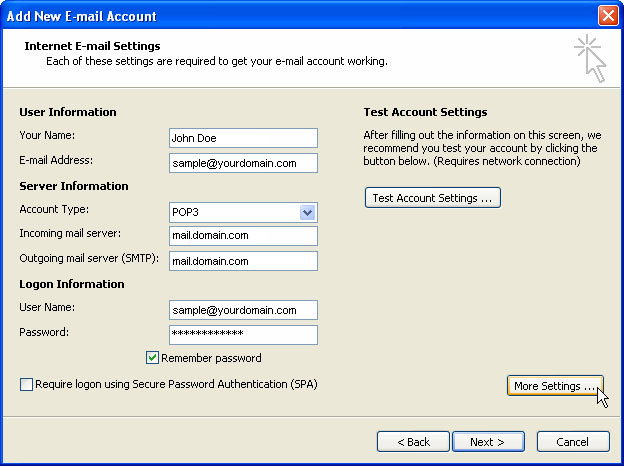
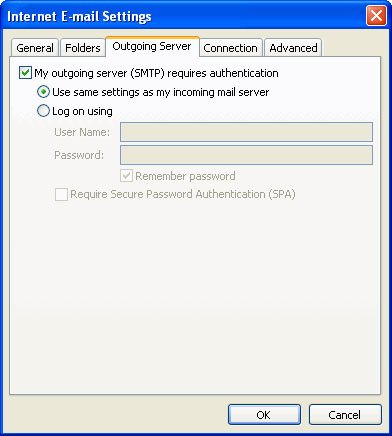

Setting up Email in Outlook 2010
- Start Outlook.
- Click the File tab
- In the Info category, click Account Settings, and then click Account Settings in the dropdown.

- On the Email tab, click New or click twice on Email Address to open its Internet Email Settings.

- Follow these steps in the Add New E-mail Account dialog box:
- Click to select the Manually configure server settings or additional server types check box, and then click Next.

- Click Internet Email, and then click Next.

- Under User Information, follow these steps:
- In the Your Name box, type your full name.
- In the Email Address box, type your full e-mail address.
- Under Server Information
- Choose POP3 in the Account Type box, follow these steps:
- In the Incoming mail server box, type "mail.domain.com".
- In the Outgoing mail server (SMTP) box, type "mail.domain.com".
- Under Logon Information, follow these steps:
- In the User Name box, type your full e-mail address.
- In the Password box, type the password provided.
- If you want Outlook to remember your email account password, click to select the Remember password check box.

- Click More Settings to open the Internet Email Settings dialog box.
- On the Outgoing Server tab, click on My Outgoing Server (SMTP) requires authentication to perform a check next to it.

- Click OK then Next, and then click Finish.